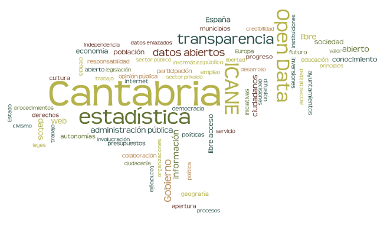

difusión web de datos estadísticos

datos tabulares
formatos de difusión
| consumo | complejidad | popularidad | metadata | |
|---|---|---|---|---|

|
manual | baja | muy alta | alta |

|
manual/auto | media | alta | alta |

|
auto | muy alta | muy baja | alta |
| auto | muy baja | muy alta | alta | |

|
auto | media | baja | muy alta |
web semántica


Acceso al repositorio con la presentación
URL de la presentación: http://icane.github.io/difusion-web
Jefe de Sección de Informática Estadística y Banco de Datos